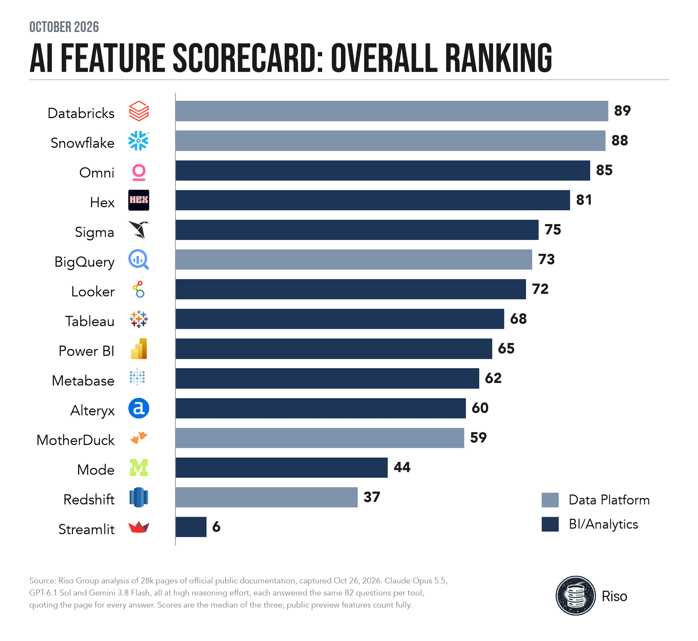

We Scored 15 Data and Analytics Tools on AI Capability: Databricks and Snowflake Lead
October 30, 2026 · 1 min read
It’s impossible to keep up with all of the innovation in data and analytics tools. Sounds like a job for AI.
Our new AI Feature Scorecard is built on LLM review of official documentation, using a long list of detailed questions that gauge AI readiness for the 15 most popular data and analytics products.
These rankings are useful for a high-level, apples-to-apples comparison of vendor AI capabilities.
The data is published in markdown you can pull into your AI tool of choice to ask questions about your use case.
If you need information that is not covered or have feedback, contact us.

![Scatter chart of Built-in AI score (across) against External AI score (up), each 0-100, for 14 tools (Streamlit off the scale): Databricks 85 built-in, 91 external; Snowflake 86 built-in, 89 external; Omni 81 built-in, 85 external; Hex 80 built-in, 67 external; Sigma 73 built-in, 78 external; BigQuery 68 built-in, 61 external; Looker 58 built-in, 80 external; Tableau 60 built-in, 59 external; Power BI 55 built-in, 72 external; Metabase 54 built-in, 80 external; Alteryx 50 built-in, 63 external; MotherDuck 36 built-in, 83 external; Mode 18 built-in, 57 external; Redshift 23 built-in, 41 external.](images/data-analytics-tools-ai-capability-oct-2026/inside_outside.png)